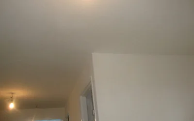
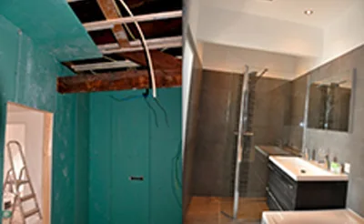
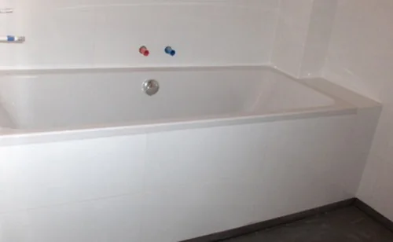
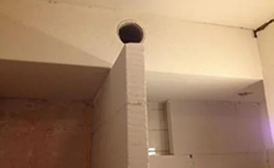
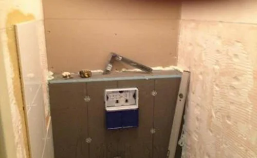
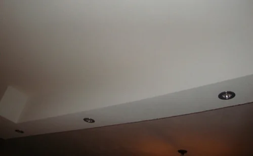
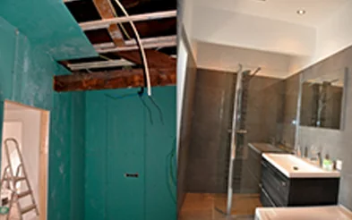

Wanden en plafonds
Stucwerk, spachtelputz en sierpleister, schuurwerk, schilderen en sausen, en tegelwerk.
Stucwerk · schilderen en sausen · tegelwerk · complete badkamers · renovatie
Een aannemer uit De Meern met ruim 20 jaar ervaring. Stucwerk, tegels en complete badkamers, uitgevoerd door de eigen ploeg met het eigen gereedschap.
Liever bellen? 030 889 7371
"Wij leveren uitsluitend kwaliteitswerk met garantie van minimaal 5 jaar!"
Bouw de Liman, op de eigen site
Beelden van de eigen site van Bouw de Liman: badkamers in aanbouw, gestucte wanden en plafonds.





Zes diensten in twee groepen.

Stucwerk, spachtelputz en sierpleister, schuurwerk, schilderen en sausen, en tegelwerk.

Het installatiewerk van complete badkamers, complete renovatie, onderhoud en reparatie.
Vraag een vrijblijvende offerte aan, of bel 030 889 7371.